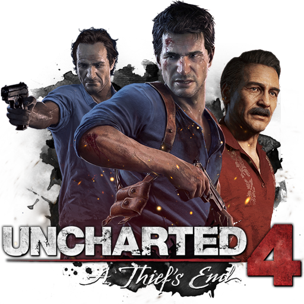

< UNCHARTED 4: A Thief's End >
개발사 : 너티 독
유통사 : 소니 인터렉티브 엔터테이먼트
출시일 : 2016년 5월 10일
플랫폼 : PS4 독점
장르 : 액션 어드벤처
*
'언차티드 4: 해적왕과 최후의 보물'은 너티독의 액션 어드벤처 게임
'언차티드' 시리즈 네 번째 넘버링 타이틀이자 PS4 독점작이다.
전작 '언차티드 3: 황금사막의 아틀란티스' 엔딩 이후 이야기를 그린
'언차티드 4: 도둑의 종말'에서 플레이어는 주인공 네이선 드레이크를 조작하여
전설적인 해적의 보물을 찾기 위한 모험을 펼치게 된다.

‘언차티드’ 시리즈는 이전부터 높은 수준의 그래픽으로 호평을 받았다.
‘언차티드 4’는 시리즈 최초로 PS4 발매됐던 ‘언차티드: 더 네이선 드레이크 컬렉션’보다
한 단계 진화한 모습을 보이며 PS4 성능을 최대로 끌어내고 있다.
여기에 눈에 들어오지 않는 작은 부분까지 완벽하게 구현한
너티독 특유의 ‘장인정신’이 결합되어 시리즈 완결에 걸맞은 완벽함을 자랑한다.
‘언차티드 4’는 다양한 부분에서 기술적인 발전이 이루어졌다.
먼저 눈에 들어오는 것은 완성도 높은 그래픽이다. 게임 내에 삽입된 컷신들이
CG영상이 아닌 인게임 화면으로 진행될 정도로 ‘언차티드 4’ 그래픽은 뛰어나다.
여기에 멀리 떨어진 곳까지 선명하게 보여 웅장한 자연환경을 즐길 수 있고, 게임 진행방향도 한눈에 보인다.